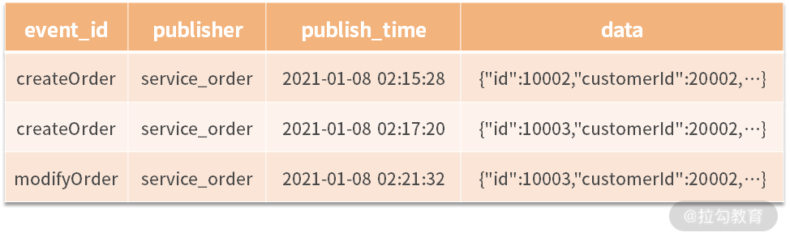

- 00 开篇词 让我们把 DDD 的思想真正落地.md.html
- 01 DDD ：杜绝软件退化的利器.md.html
- 02 以电商支付功能为例演练 DDD.md.html
- 03 DDD 是如何落地到数据库设计的？.md.html
- 04 领域模型是如何指导程序设计的？.md.html
- 05 聚合、仓库与工厂：傻傻分不清楚.md.html
- 06 限界上下文：冲破微服务设计困局的利器.md.html
- 07 在线订餐场景中是如何开事件风暴会议的？.md.html
- 08 DDD 是如何解决微服务拆分难题的？.md.html
- 09 DDD 是如何落地微服务设计实现的？.md.html
- 10 微服务落地的技术实践.md.html
- 11 解决技术改造困局的钥匙：整洁架构.md.html
- 12 如何设计支持快速交付的技术中台战略？.md.html
- 13 如何实现支持快速交付的技术中台设计？.md.html
- 14 如何设计支持 DDD 的技术中台？.md.html
- 15 如何设计支持微服务的技术中台？.md.html
- 16 基于 DDD 的代码设计演示（含 DDD 的技术中台设计）.md.html
- 17 基于 DDD 的微服务设计演示（含支持微服务的 DDD 技术中台设计）.md.html
- 18 基于事件溯源的设计开发.md.html
18 基于事件溯源的设计开发
上一讲通过代码演示，全面展示了基于 DDD 的设计开发思路，包括：如何实现聚合、如何设计仓库、如何将领域对象与数据库映射，以及我设计的基于 DDD 与微服务的技术架构。通过这些讲解为你展开了一幅如何实现领域驱动的系统开发的全景图。然而，这些设计还缺少一个重要的内容，即基于领域事件的设计与开发。
基于事件溯源的设计思路
[第 07 讲“在线订餐场景中是如何开事件风暴会议的？”]谈到了 DDD 中“事件风暴（Event Storming）”的实践方法。该方法认为，事件即事实（Event as Fact），即在业务领域中已经发生的事件就是事实（Fact）。过去发生的事件已经成为了事实，就不能再更改，因此信息管理系统就可以将这些事实以信息的形式存储到数据库中，即信息就是一组事实。
所以，一个信息化管理系统的作用，就是存储这些事实，对这些事实进行管理与跟踪，进而起到提高工作效率的作用。基于这样的思路，分析一个信息管理系统的业务需求，就是准确地抓住业务进行过程中需要存储的关键事实，并围绕着这些事实进行分析设计、领域建模，这就是“事件风暴”的精髓。
然而，按照“事件风暴”法完成对系统的分析与设计，最终落实到系统建设又应当怎样做呢？前面[第 08 讲“DDD 是如何解决微服务拆分难题的？”]通过讲解在线订餐系统，最终落实到领域事件的发布与通知机制：
- “用户下单”微服务在完成下单以后，通过事件通知机制通知“饭店接单”微服务；
- “饭店接单”微服务在准备就绪以后，通过事件通知机制通知“骑士派送”微服务。
这种领域事件的消息通知机制就是“事件溯源”的设计思路。
“事件溯源”是一种全新的设计思路，它将过去耦合在一起的业务流程有效地解耦，让越来越复杂的业务系统能够松耦合地拆分为一个个独立组件，实现组件式的设计开发与插拔式的业务变更。现在通过案例来看一看“事件溯源”的设计与传统的设计有哪些方面的不同。
拿“用户下单”这个业务场景来说。从业务需求的角度看，当用户下单以后，需要完成哪些操作，在需求上有非常大的不确定性。
譬如，在用户下单后最初的需求就是库存扣减，这时传统的做法就是在保存订单以后，直接调用库存扣减的方法，完成相应的操作；接着，又提出了启动物流的需求，需要调用一个启动物流配送的方法。然而，事情还没完，过了一段时间，产品经理又提出了会员管理的需求，用于计算会员积分，或提供会员福利。
每提出一个新的需求，都需要修改“用户下单”的代码，在用户下单以后增加某些操作。这样的设计就使得“用户下单”的功能变得非常不稳定，总是要不停地修改。
与传统的设计思路不同，“事件溯源”的设计思路是，当完成用户下单以后，只需要实现一个“用户下单”的领域事件，至于用户下单以后需要做什么事情，与“用户下单”无关。因此，通过“事件溯源”的设计，就使得业务流程中的上下游相互解耦。上游只需要发布领域事件，而由下游自己去定义后续要做什么事情，从而实现了复杂系统的松耦合与可维护。
领域事件的设计实现
清楚了“事件溯源”的设计思路，那么应当如何实现呢？我们的思路就是根据“事件风暴”中分析识别的领域事件，在每次完成相应工作以后增加一个对领域事件的发布，其发布的内容包括：事件名称、发布者、发布时间与相关的数据。譬如，当用户下单以后，发布这样一个领域事件：
{ event_id: “createOrder”, publisher: “service_order”, publish_time: “2021-01-07 18:38:00.000”, data: { id: “300001”, customer_id: “200005”, … } }
在这里，不同的领域事件后面的参数是不一样的，有的可能是一个领域对象，有的可能是一个数组参数，抑或是一个Map，甚至没有参数。譬如，一些领域事件就是一个状态的改变，所以不包含参数。什么领域事件跟着什么参数，是事件的发布者设计的，然后将协议告知所有订阅者。这样，所有的订阅者就根据这个协议，自己去定义后续的操作。
依据这样的思路落地到项目中，事件发布者要在方法的最后完成一个事件的发布。至于到底要做什么事件，交由底层技术中台去定义，比如发送消息队列，或者写入领域事件表中。例如，在“用户接单”中完成事件发布：
@Override
public void createOrder(Order order) {
...
createOrderEvent.publish(serviceName, order);
}
@Override
public void modifyOrder(Order order) {
...
modifyOrderEvent.publish(serviceName, order);
}
接着，事件订阅者需要为每一个事件编写相应的领域事件类，在 apply() 方法中定义该事件需要做什么操作，例如，在“饭店接单”中定义“用户下单”事件的操作：
public class CreateOrderEvent implements DomainEvent<Order> {
@Override
public void apply(Order order) {
...
}
}
事件溯源就是将事件的发布与操作分离，业务的上游负责发布，下游负责订阅并完成某些操作，从而实现上下游的解耦。上游只有一个发布者，但下游可以有很多发布者，各自执行不同的操作。
此外，一个值得讨论的问题是，事件风暴中定义的每个事件，是不是都需要发布领域事件呢？譬如在线订餐系统中，“用户下单”需要发布领域事件，然后“饭店接单”需要接收这个事件，但“饭店接单”这个领域事件需要发布吗？它的下游似乎没有人接收。但是，未来需求怎么变更，谁又会知道呢？当系统增加“订单跟踪”时，就需要跟踪每一个领域事件。所以我们说，因为无法预知未来的变化，最好的做法就是老老实实地将每一个领域事件都予以发布。
基于消息的领域事件发布
前面讲解了领域溯源的设计思路，最后要落地到项目实践中，依然需要技术中台的相应支持。譬如，业务系统的发布者只负责事件的发布，订阅者只负责事件的后续操作。但这个过程该如何发布事件呢？发布事件到底要做什么呢？又如何实现事件的订阅呢？这就需要下沉到技术中台去设计。
首先，事件的发布方在发布事件的同时，需要在数据库中予以记录。数据库可以进行如下设计：

接着，领域事件还需要通过消息队列进行发布，这里可以采用 Spring Cloud Stream 的设计方案。Spring Cloud Stream 是 Spring Cloud 技术框架中一个实现消息驱动的技术框架。它的底层可以支持 RabbitMQ、Kafka 等主流消息队列，通过它的封装实现统一的设计编码。
譬如，以 RabbitMQ 为例，首先需要在项目的 POM.xml 中加入依赖：
<dependencies>
<dependency>
<groupId>org.springframework.cloud</groupId>
<artifactId>spring-cloud-starter-stream-rabbit</artifactId>
</dependency>
</dependencies>
接着，在 bootstrap.yml 文件中，将领域事件与消息队列绑定。例如，在“用户下单”微服务中定义领域事件的发布，如下代码所示：
spring:
rabbitmq:
host: xxx.xxx.xxx.xxx
port: 5672
username: guest
password: guest
cloud:
stream:
bindings:
createOrder:
destination: createOrder
modifyOrder:
destination: modifyOrder
然后，定义领域事件及其客户端，如下代码所示：
public interface CreateOrderEventClient {
String OUTPUT = "createOrder";
@Output(CreateOrderEventClient.OUTPUT)
MessageChannel output();
}
@EnableBinding(value=CreateOrderEventClient.class)
@Component
public class CreateOrderEvent {
@Autowired
private CreateOrderEventClient client;
/**
* @param publisher
* @param data
*/
public void publish(String publisher, Object data) {
String eventId = "createOrder";
Date publishTime = DateUtils.getNow();
DomainEventObject event = new DomainEventObject(eventId,
publisher, publishTime, data);
event.save();
client.output().send(MessageBuilder.withPayload(event).build());
}
}
在“用户下单”微服务中，如上所述依次定义每个领域事件，如用户下单、修改订单、取消订单，等等。这样，在“用户下单”微服务完成相应操作时，领域事件就会发布到消息队列中。
最后，再由订阅者去完成对消息队列的订阅，并完成相应操作。这时，还是先在 bootstrap.yml文件中绑定领域事件，如下代码所示：
spring:
profiles: dev
rabbitmq:
host: 118.190.201.78
port: 31672
username: guest
password: guest
cloud:
stream:
bindings:
createOrder:
destination: createOrder
group: ${spring.application.name}
modifyOrder:
destination: modifyOrder
group: ${spring.application.name}
这里增加了一个 group，当该服务进行多节点部署时，每个事件只会有一个微服务接收并予以处理。接着，定义领域事件类，一方面监听消息队列，一方面定义后续需要完成什么操作：
public interface CreateOrderEventClient {
String INPUT = "createOrder";
@Input(CreateOrderEventClient.INPUT)
SubscribableChannel input();
}
@Component
@EnableBinding(value= {CreateOrderEventClient.class})
public class CreateOrderEvent {
@StreamListener(CreateOrderEventClient.INPUT)
public void apply(DomainEventObject obj) {
...
}
}
这时，在“饭店接单”与“订单跟踪”微服务都有 CreateOrderEvent 这个领域事件，然而它们各自的 apply() 方法要完成的事情是不一样的，就可以彼此独立地完成各自的工作。比如：“饭店接单”是发送消息给前端，通知饭店完成接单操作，而“订单跟踪”则是接收到信息以后，更新订单的相应状态。但不论是谁，都会在各自的数据库中记录下接收的领域事件。
总结
事件溯源是 DDD 设计实践中另一个重量级的工具包。它解耦了领域事件的上下游，将事件的发布与做什么操作解耦，即事件的上游负责执行 publish() 方法发布事件，而事件的下游负责各自去定义各自的 apply() 方法，完成后续的操作。这样的设计使得复杂的业务流程，可以松耦合地分解到多个组件中独立完成，也会更加广泛地应用到微服务的设计中。
通过 Spring Cloud Stream 的消息驱动，将领域事件发布到消息队列中，就可以更好地在软件项目中实践“事件溯源”的设计方法。但这样的设计更需要 DDD 技术中台的底层支持。
下一讲，我们将从实战的角度，去看一看一个更大规模的人工智能系统是如何实现领域驱动设计的。